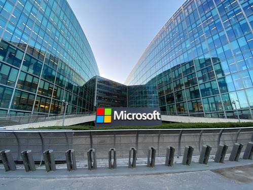

HISTORIA DE LA EMPRESA DE MICROSOFT

Fundada el 4 de abril de 1975 por Bill Gates y Paul Allen, Microsoft comenzó desarrollando el lenguaje de programación Altair BASIC. Su salto al éxito ocurrió en 1980 cuando creó el sistema operativo MS-DOS para IBM, lo que pavimentó el camino para el lanzamiento de la interfaz gráfica Windows en 1985.
La era del dominio y la expansión
En los años 90, la empresa consolidó su monopolio en el mercado de las computadoras personales (PC) con el masivo lanzamiento de Windows 95. Paralelamente, la creación de la suite Microsoft Office (que integró Word, Excel y PowerPoint) transformó la forma en que se trabajaba en oficinas de todo el mundo. El liderazgo de Gates eventualmente pasó a Steve Ballmer en el año 2000, periodo en el que la compañía expandió su imperio hacia el entretenimiento con el lanzamiento de la consola Xbox (2001).
Transformación moderna y Cloud First
Bajo el liderazgo de Satya Nadella, quien asumió como CEO en 2014, Microsoft dio un giro radical adoptando el modelo de servicios en la nube (Microsoft Azure) y promoviendo el código abierto. La empresa se convirtió en un gigante de la inteligencia artificial y los servicios empresariales, consolidando su posición como una de las compañías más valiosas del mundo.
Pilares principales de la empresa:
-
Software: Creadores de Windows, el sistema operativo más utilizado en computadoras a nivel global.
-
Ofimática: Proveedores de Microsoft 365 (Word, Excel, PowerPoint y Outlook).
-
Nube e IA: Lideran la infraestructura de computación en la nube con Azure e integran Inteligencia Artificial en sus servicios.
-
Hardware y Entretenimiento: Fabricantes de la línea de consolas de videojuegos Xbox y las computadoras Surface.
Las 7 herramientas principales que componen el ecosistema de productividad y colaboración Microsoft 365 son:
-
Word: Procesador de textos para redactar, editar y colaborar en documentos profesionales.
-
Excel: Programa de hojas de cálculo avanzado para análisis de datos, modelos financieros y control empresarial Excel.
-
PowerPoint: Herramienta para crear presentaciones visuales dinámicas e interactivas con gráficos y animaciones PowerPoint.
-
Outlook: Cliente de correo electrónico y gestor de calendario, contactos y tareas.
-
OneDrive: Servicio de almacenamiento en la nube para guardar y sincronizar archivos desde cualquier dispositivo.
-
OneNote: Bloc de notas digital para recopilar apuntes, dibujos, recortes web y grabaciones de audio.
-
Teams: Plataforma unificada de comunicación y trabajo en equipo que permite chat, videollamadas y colaboración en archivos Teams.
